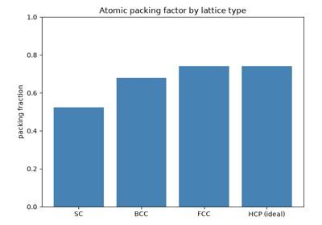
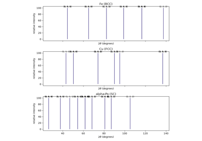

Breakthroughs in Crystallography#
“There must be some definite cause why, whenever snow begins to fall, its initial formations invariably display the shape of a six-cornered starlet.” – Johannes Kepler, Strena Seu de Nive Sexangula (A New Year’s Gift, or On the Six-Cornered Snowflake), 1611
Crystallography began as a question about shape: why does a mineral,
however it is broken, keep reappearing in the same family of angles and
faces? Two centuries of answers – first geometric, then atomic, then wave-
mechanical – turned that question into the modern description of a solid
as a periodic array of points decorated with atoms, probed by diffraction
and quantified by a handful of lattice sums and empirical equations. The
systems in chemistrykit.crystal retrace that arc: from the purely
geometric classification of a unit cell, through the packing and
diffraction consequences of periodicity, to the electrostatic and
statistical-mechanical models of an ionic crystal’s energy and defects.
This chronology traces the major conceptual breakthroughs behind the
package, with a pointer to the corresponding implementation at each stop.
1784 – 1801 – Hauy and the Law of Rational Indices#
Rene Just Hauy, examining a piece of calcite (Iceland spar) that had shattered when dropped, noticed something a casual glance would miss: however the crystal broke, every fragment cleaved along the same family of planes, meeting at the same characteristic angles regardless of the original specimen’s external shape. Hauy generalized the observation into a structural hypothesis – a crystal is built from identical, invisibly small “integrant molecules” stacked in an orderly three-dimensional array – and, from that hypothesis, derived the law of rational indices: every natural face of a crystal can be described by intercepts on the three crystallographic axes that stand in a ratio of small whole numbers. Hauy first laid out the stacking hypothesis in his 1784 Essai d’une théorie sur la structure des crystaux and gave it its mature, systematic treatment in the four-volume Traité de Minéralogie of 1801, for which he is often called the founder of modern crystallography. The law of rational indices is the founding empirical result of the whole field: it is the first quantitative statement that a crystal’s outward geometry is the visible signature of an internal, discrete periodic order, decades before anyone had direct evidence – diffraction or otherwise – of what such an order might look like at the atomic scale.
Implementation: Hauy’s stacking hypothesis, freed of its literal
“integrant molecule” mechanism, is exactly the modern idea that a crystal
reduces to a lattice classified by the equalities and inequalities among
six parameters – what
classify_crystal_system()
computes directly, sorting a unit cell into one of the 7 crystal systems
purely from \((a,b,c,\alpha,\beta,\gamma)\), with
unit_cell_volume()
giving the corresponding general cell-volume formula. Hauy’s rational-
index law itself survives essentially unchanged in modern notation as the
integer Miller indices \((h,k,l)\) (formalized by Whewell and Miller a
few decades later) that index every reflection and atomic-plane spacing
throughout chemistrykit.crystal.systems.xrd – the hkl argument
of structure_factor() and
d_spacing_cubic() is, in substance,
Hauy’s own rational triple of intercepts.
References: R. J. Hauy, Essai d’une théorie sur la structure des crystaux (Paris: Gogué & Née de la Rochelle, 1784); R. J. Hauy, Traité de Minéralogie, 4 vols. (Paris: Chez Louis, 1801).

1848 – Bravais and the 14 Space Lattices#
Auguste Bravais asked a purely combinatorial question about Hauy’s stacking hypothesis: if a crystal is a periodic array of points, how many geometrically distinct ways can such an array actually be arranged in three dimensions? Bravais’s 1848 memoir answered it exactly: there are 14 distinct lattice types (a correction of Moritz Frankenheim’s 1842 count of 15, one of which Bravais showed was a duplicate already present among the others), classified by the combination of the 7 crystal systems above with the possible centerings (primitive, body-centered, face-centered, base-centered) consistent with each system’s symmetry. The result gave crystallography its first rigorous, purely geometric answer to “what kinds of periodic order are even possible” – independent of what atoms, if any, sit at the lattice points – and remains the organizing classification underneath every space group and every concrete lattice model in this package.
Implementation: three of the four hard-sphere lattices in
chemistrykit.crystal.systems.packing –
SimpleCubicPacking,
BodyCenteredCubicPacking,
and FaceCenteredCubicPacking
– are three of Bravais’s 14 lattices in the cubic system (P, I, and F
centering respectively), sharing the common
LatticePacking interface.
HexagonalClosePacking is a
deliberate exception worth flagging precisely because it is easy to
misstate: HCP is not itself one of the 14 Bravais lattices – it is a
2-atom basis (the ABAB stacking sequence) decorating the single primitive
hexagonal Bravais lattice, which is why its coordination number (12)
matches FCC’s close packing even though the underlying lattice is
different in kind, not just in centering. The same three cubic Bravais
lattices reappear as the conventional-cell bases (_CUBIC_BASES) that
powder_xrd_peaks() sums over below.
References: A. Bravais, “Mémoire sur les systèmes formés par des points distribués régulièrement sur un plan ou dans l’espace,” J. Ecole Polytechnique 19 (1850), 1-128 (the memoir is dated and generally credited to 1848, the year of its presentation to the Académie des Sciences, though formal publication followed in 1850).

Packing efficiency of SC, BCC, FCC, and HCP
1912 – von Laue, Friedrich, and Knipping: X-ray Diffraction by Crystals#
Max von Laue conjectured that if crystals really are periodic arrays of discrete scattering centers, as Hauy and Bravais’s geometry implied, and if X-rays really are electromagnetic waves of a wavelength comparable to the spacing between those centers (both open questions at the time), then a crystal should diffract a beam of X-rays exactly as a ruled grating diffracts visible light. Walter Friedrich and Paul Knipping tested the idea in Munich in 1912, directing a beam of X-rays through a crystal and recording the transmitted beam on a photographic plate placed behind it: rather than a single spot, the plate showed a symmetric pattern of sharp, discrete spots surrounding the direct beam – the unmistakable signature of interference between many coherently scattering, periodically arranged centers. The experiment settled both open questions simultaneously: X-rays are waves capable of interference, and crystals are periodic on a length scale close to the X-ray wavelength – turning Hauy and Bravais’s purely geometric lattice hypothesis into a directly, physically observable fact for the first time. Von Laue received the 1914 Nobel Prize in Physics for the discovery; Friedrich and Knipping, who ran the actual experiment, did not share it, a point of enduring controversy in the historical record.
Implementation: Laue’s own diffraction condition is usually stated in
terms of the scattered-wave momentum transfer matching a reciprocal-
lattice vector, a transmission-geometry formulation this package does not
implement directly; instead, following the Braggs’ equivalent and more
widely used reflection-geometry recasting below,
structure_factor() computes exactly
the kinematic amplitude
\(F_{hkl}=\sum_j f_j\exp[2\pi i(hx_j+ky_j+lz_j)]\) whose squared
modulus is what a real diffraction experiment – Laue’s transmission
photograph or a modern powder pattern alike – actually measures, with
powder_xrd_peaks() assembling full
simulated patterns from it.
References: W. Friedrich, P. Knipping, and M. Laue, “Interferenz- Erscheinungen bei Röntgenstrahlen,” Sitzungsberichte der Königlich Bayerischen Akademie der Wissenschaften, math.-phys. Klasse (1912), 303-322, with the quantitative follow-up “Eine quantitative Prüfung der Theorie für die Interferenz-Erscheinungen bei Röntgenstrahlen,” same volume, 363-373.

Powder XRD: Bragg’s law and systematic absences
1912 – 1913 – The Braggs and Bragg’s Law#
William Henry Bragg and his son William Lawrence Bragg – 22 years old at the time – recast von Laue’s diffraction condition into a far more usable form: treat each family of parallel lattice planes, spaced d apart, as a partially reflecting mirror, and demand that waves reflected from successive planes arrive back in phase. The resulting condition,
is simple enough to solve for d (and hence for atomic positions) from a measured diffraction angle \(\theta\), and W. L. Bragg used it, together with an X-ray spectrometer his father built, to solve the first crystal structures ever determined this way – sodium chloride, zinc blende, and diamond among them – launching X-ray crystallography as a practical tool for structure determination rather than a novel diffraction curiosity. The Braggs shared the 1915 Nobel Prize in Physics for the work, the only father-son pair to share a Nobel Prize in the same field to date, with W. L. Bragg – 25 at the time of the award – still the youngest Nobel laureate in the sciences.
Implementation: bragg_angle()
solves exactly the equation above for \(\theta\), given a d-spacing
and wavelength; d_spacing_cubic()
supplies d for a cubic lattice’s \((hkl)\) planes, and
powder_xrd_peaks() combines both
with structure_factor() – dropping
reflections with zero structure factor (systematic absences, the modern
tool the Braggs lacked but which falls directly out of the same theory) –
to enumerate an entire simulated powder pattern exactly the way the
Braggs’ spectrometer would trace one out peak by peak.
References: W. H. Bragg and W. L. Bragg, “The Reflection of X-rays by Crystals,” Proc. R. Soc. Lond. A 88 (1913), 428-438; W. L. Bragg, “The Diffraction of Short Electromagnetic Waves by a Crystal,” Proc. Camb. Phil. Soc. 17 (1913), 43-57 (read to the Society on 11 November 1912).
Powder XRD: Bragg’s law and systematic absences
1918 – Born and Lande’s Lattice-Energy Equation#
Max Born and Alfred Lande set out to explain a specific, measurable number: the energy released when a mole of gaseous ions condenses into an ionic crystal, extractable experimentally from a Born-Haber thermochemical cycle. Their model balances two effects at the equilibrium ion spacing \(r_0\) – the attractive electrostatic energy of the whole lattice of point charges (bundled into the Madelung constant M, the subject of Madelung’s companion paper below) against a short-range repulsion between overlapping electron clouds, modeled as an empirical inverse power law \(\propto 1/r^n\):
The Born exponent n was fixed independently, from each ion’s measured compressibility, and tabulated by isoelectronic noble-gas configuration – a scheme still in use essentially unchanged today. It was, together with Madelung’s lattice sum below, the first quantitative theory to connect a crystal’s cohesive energy to nothing but its structure, its ions’ charges, and a single empirically fitted repulsion exponent.
Implementation: chemistrykit.crystal.systems.lattice_energy.BornLandeLatticeEnergy
evaluates exactly this equation;
chemistrykit.crystal.utils.reference_data.BORN_EXPONENTS reproduces
Born and Lande’s own noble-gas-configuration exponent table, and
average_born_exponent()
implements the standard prescription (arithmetic mean of the two ions’
exponents) for a salt of two different ion types.
References: M. Born and A. Lande, “Über die Berechnung der Kompressibilität regulärer Kristalle aus der Gittertheorie,” Verh. Dtsch. Phys. Ges. 20 (1918), 210-216.

1918 – Madelung’s Electrostatic Lattice Sum#
Alongside Born and Lande’s equation above, Erwin Madelung worked out the purely geometric half of the same problem: for ions of unit charge sitting at the points of a given lattice, what is the net electrostatic energy of one ion in the field of every other ion in the (infinite) crystal? The answer is a single dimensionless number per structure type – the Madelung constant M – defined so that the electrostatic lattice energy per ion pair is \(U=-Mz_+z_-e^2/(4\pi\varepsilon_0 r_0)\), exactly the quantity Born and Lande’s equation needs as an input. Madelung’s own 1918 paper is a general treatment of the electric field produced by any regular array of point charges, not confined to any one structure; specializing it to the rock-salt (NaCl) structure gives the specific constant \(M_{NaCl}\approx1.7476\) used throughout this package. What Madelung’s paper does not resolve – and what would remain a subtlety for over a decade – is that the defining lattice sum is only conditionally convergent, a complication taken up by Evjen below.
Implementation: madelung_constant_nacl()
computes exactly this NaCl Madelung constant (via the genuinely convergent
Evjen-method summation described in the next entry, rather than the naive
sum Madelung’s own paper does not distinguish from the correct one), and
MADELUNG_CONSTANT_NACL_LITERATURE
records the accepted literature value it reproduces to 5 significant
figures; chemistrykit.crystal.systems.lattice_energy.BornLandeLatticeEnergy
consumes it directly as the madelung_constant feeding Born and Lande’s
equation above.
References: E. Madelung, “Das elektrische Feld in Systemen von regelmäßig angeordneten Punktladungen,” Phys. Z. 19 (1918), 524-533 (this page range is the one most consistently given in secondary crystallography references; an occasional secondary source instead cites p. 32 of the same volume, and the discrepancy has not been independently resolved against the original issue).
1926 – Frenkel and the Vacancy-Interstitial Defect#
Yakov Frenkel, studying the thermal motion of atoms in solids and liquids, recognized that a perfectly ordered crystal is a T=0 idealization: at any finite temperature, thermal fluctuations will occasionally kick an ion out of its regular lattice site into a normally unoccupied interstitial gap, leaving a vacancy behind. Because forming such a pair costs a fixed enthalpy but also raises the crystal’s configurational entropy (there are combinatorially many ways to place a handful of vacancy-interstitial pairs among many sites), minimizing the resulting Gibbs energy gives a small but strictly nonzero equilibrium population of these defects at any T>0 – not a flaw to be engineered away, but a necessary consequence of thermodynamics. This vacancy-interstitial pairing, now called a Frenkel defect, was the first of the two canonical point-defect mechanisms in ionic solids to be identified; the second, the Schottky defect, followed four years later.
Implementation: frenkel_defect_concentration()
implements exactly the resulting Boltzmann-factor equilibrium population,
\(n_F=\sqrt{NN_i}\exp(-\Delta H_F/2k_BT)\), with N the number of
normal lattice sites and \(N_i\) the number of available interstitial
sites.
References: J. Frenkel, “Über die Wärmebewegung in festen und flüssigen Körpern,” Z. Phys. 35 (1926), 652-669.
1930 – Wagner and Schottky: The Paired-Vacancy Defect#
Carl Wagner and Walter Schottky, developing a general thermodynamic theory of “ordered mixed phases” (crystals whose stoichiometry can deviate slightly from an ideal integer ratio), identified the second canonical point-defect mechanism: rather than displacing an ion to an interstitial site, a crystal can instead remove a stoichiometric pair of ions – one cation and one anion – from the bulk entirely, depositing them at the crystal’s surface and leaving a paired cation-anion vacancy behind. Because this mechanism removes ions in a fixed charge-neutral ratio rather than merely relocating one, it dominates in ionic solids where an isolated interstitial cation (or anion) would be too large or too costly to accommodate, and it became the founding concept of what is now called defect chemistry – the systematic study of how nonstoichiometry and ionic conductivity in real crystals are controlled by exactly this kind of point-defect population, rather than being simply the failure of an otherwise-perfect lattice.
Implementation: schottky_defect_concentration()
implements the corresponding Boltzmann-factor equilibrium population,
\(n_S=N\exp(-\Delta H_S/2k_BT)\), and
chemistrykit.crystal.visualizers.crystal_plots.plot_defect_concentration_vs_temperature()
plots it directly alongside the Frenkel population above, on the same
semi-log temperature axis, making the shared Boltzmann-factor functional
form – and the very different magnitudes two different formation
enthalpies produce – visually explicit.
References: W. Schottky and C. Wagner, “Theorie der geordneten Mischphasen,” Z. Phys. Chem. B 11 (1930), 163-210.
Schottky and Frenkel defect equilibrium
1932 – Evjen’s Method for a Genuinely Convergent Madelung Sum#
The Madelung lattice sum that Madelung’s 1918 paper defines has an unpleasant property that went unaddressed for over a decade: it is only conditionally convergent. Summing the alternating \(\pm1/r\) series over a naively growing cube or sphere of ions does not settle down to a single value as the cutoff grows – it oscillates, because the outermost shell added at each step of the expansion is not itself electrically neutral, so its contribution never shrinks to zero the way an absolutely-convergent series’ tail would. H. M. Evjen supplied the fix: give any ion whose position lies exactly on the truncation region’s boundary a fractional weight (one-half for a face, one-quarter for an edge, one-eighth for a corner of the truncating cube) chosen precisely so that every finite partial sum is built from an electrically neutral region, restoring genuine, rapidly converging convergence to the correct conditionally-convergent limit. Evjen’s method remains the standard textbook technique for evaluating Madelung constants by direct summation.
Implementation: chemistrykit.crystal.utils.lattice_sums.evjen_lattice_sum_cubic_alternating()
implements exactly this fractional-boundary-weighting scheme over a simple
cubic lattice of alternating unit charges – the object NaCl’s Madelung
sum reduces to once its two interpenetrating FCC sublattices are combined
onto one finer simple-cubic mesh – and its module docstring includes a
runnable demonstration that a naive, unweighted truncated sum genuinely
does oscillate (standard deviation over n_shells = 6..10 well above
0.05) while the Evjen-weighted sum has already converged
(standard deviation below \(10^{-4}\)) over the same range;
madelung_constant_nacl()
is the NaCl-specific wrapper that consumes it.
References: H. M. Evjen, “On the Stability of Certain Heteropolar Crystals,” Phys. Rev. 39 (1932), 675-687.
Converging the NaCl Madelung constant
1956 – Kapustinskii’s Structure-Independent Lattice-Energy Equation#
Anatoli Kapustinskii noticed an empirical regularity in Born-Lande-type lattice energies across many known salts: the Madelung constant of a given structure type, divided by the number of ions per formula unit, is nearly the same from one structure to the next. Exploiting that near-constancy, he proposed a lattice-energy equation built entirely from ionic radii and charges – no Madelung constant, and hence no assumed crystal structure, required at all:
with \(\kappa\) and d empirical constants fitted so the equation reproduces Born-Lande and experimental lattice energies to within about 5%. Because it needs no prior knowledge of a salt’s actual crystal structure – only its ionic radii, which can be estimated for essentially any ion pair – the Kapustinskii equation became, and remains, the standard quick estimate for the lattice energy of a hypothetical or poorly characterized salt, exactly the situation the structure-dependent Born-Lande equation above cannot handle at all.
Implementation: chemistrykit.crystal.systems.lattice_energy.KapustinskiiLatticeEnergy
implements exactly this equation, sharing the
LatticeEnergyModel
interface with BornLandeLatticeEnergy
so the two independently-derived estimates can be compared directly on
the same salt.
References: A. F. Kapustinskii, “Lattice Energy of Ionic Crystals,” Q. Rev. Chem. Soc. 10 (1956), 283-294.
1976 – Shannon’s Revised Effective Ionic Radii#
R. D. Shannon compiled and critically re-analyzed thousands of measured interatomic distances in oxide and halide crystals to produce a self-consistent table of “effective ionic radii” for essentially every common ion, superseding the older, less systematic scales of Goldschmidt and Pauling from the 1920s. Shannon’s key methodological insight was to treat the radius not as a single fixed number per ion but as a value depending explicitly on coordination number and, for transition metals, on spin state – so that an ion’s tabulated radius comes with the coordination environment it was fitted for, rather than being applied uniformly regardless of context. The resulting table, still in routine use exactly as published, is the standard reference source for ionic radii throughout structural and solid-state chemistry, radius-ratio rules, and, as below, the Kapustinskii equation’s radius-only lattice- energy estimates.
Implementation: chemistrykit.crystal.utils.reference_data.SHANNON_IONIC_RADII_PM
tabulates Shannon’s 6-coordinate (octahedral) effective ionic radii for
the common main-group ions used in this domain’s Kapustinskii-equation
examples and tests – consumed directly as the r_cation_pm/r_anion_pm
arguments of chemistrykit.crystal.systems.lattice_energy.KapustinskiiLatticeEnergy.
References: R. D. Shannon, “Revised Effective Ionic Radii and Systematic Studies of Interatomic Distances in Halides and Chalcogenides,” Acta Cryst. A32 (1976), 751-767.